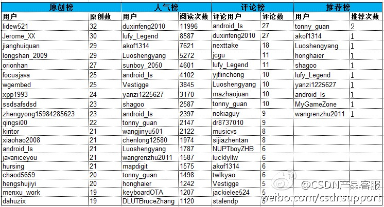

最近把社区运营部门所负责的几个官方微博帐号都看了看，决定主力推@CSDN产品客服 部门内做了些分工，每人都有负责的内容部分，我负责#产品动态#内容，因为各个CSDN新产品和产品升级，我是部门内最早知道的。推这个帐号，是为了拓展CSDN社区在微博平台上的发声渠道。
2013年4月15日公布最终排行，还有一个多星期。@CSDN产品客服:#博客#CSDN博客第一期移动开发排行榜，截止于2013年4月6日排名领先的用户如下：快来看看有木有自己啊，更多详情请点击：网页链接 
菲利浦•津巴多是<心理学与生活＞的作者。@TEDtoChina:为什么美国男孩辍学率比女孩高30%，女孩成绩普遍好于男孩？男性在学术成就上正走向低谷，因男人把时间花在和女性社交以及两性关系上.心理学家菲利普津巴多这#TED#演讲有点毁三观啊：因为男性喜欢快速得到新的兴奋，如网瘾、电游瘾、看"爱情动作片"瘾造成了男性衰落 网页链接 警醒啊Man